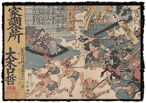
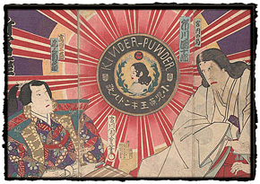

|
Drug Advertisements
by Laura W. Allen
Over a third of the woodblock prints in the UCSF collection are advertisements for medicines or cosmetic products. Along with many plain, printed texts in this category are more than forty illustrated advertisements. One early example is a diptych from the 1840s purveying a medicine called Gozōen, used for reducing dizziness, or nobose. It contains an imaginative rendering of the drug's powerful effect. At left a man sits drowsing against a wooden armrest, his eyes closed, a cloud of dizziness emanating from his body to envelop the dream-like scene played out before him. There, a group of warriors, representing the medicine, rout a bunch of half-naked demons personifying the conditions causing dizziness: coughs, fever, and so on. To the left of this scene is a helpful banner informing viewers of the name and location of the Edo shop where this wonder drug may be purchased.
Some of the most fascinating drug advertisements are those employing popular kabuki actors to sell medicines — the nineteenth-century equivalent of a Hollywood actor being enlisted to market a brand of aspirin or cough suppressant. One spectacular example is a triptych promoting a drug for children, published in November 1880. At the center is a roundel containing the image of a Western child, with curling black hair and deep red lips. Above it is written the word Kinder-puwder, in capital letters; below, the Japanese characters read "King of children's medicine, Kindoru powder." Red and white lines radiate from this circle as a backdrop for two actors, identified as Ichikawa Danjuro (IX), in the role of the court lady Kunai no tsubone, and Onoe Kikugoro (V) as the warrior Takada Sannosuke (author's note: this is curious, as Danjuro was not known for his female roles, and the performance is not listed in standard chronologies). The text to their right and left suggest that the drug company is the sponsor for this performance, now playing at the Shintomiza theater. The print simultaneously advertises both play and medicine, and both the drug and the actors are "stars."
|
{% include sidenav.html %} | ||